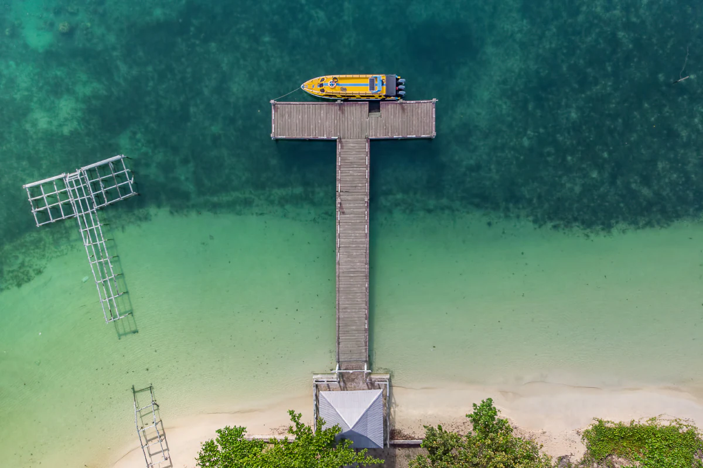
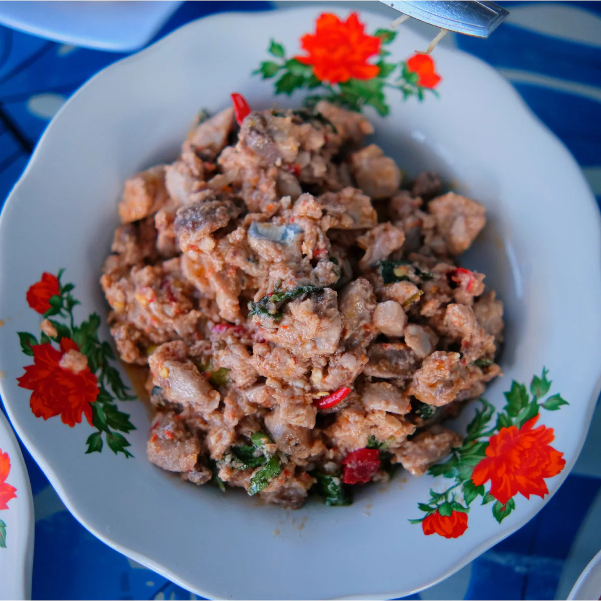

Morotai, Surga Tropis di Maluku Utara
Sobat Pesona ada yang sudah kenal belum sama Pulau Morotai? Pulau yang tersembunyi di ujung Maluku Utara ini ternyata kaya akan pemandangan yang luar biasa, lho! Selain itu, Pulau Morotai juga pun menyimpan sebuah sejarah yang cukup menarik di masa lalu. Enggak cuma punya pemandangan cantik sama sejarah unik, pulau yang dijadikan sebagai salah satu Destinasi Pariwisata Prioritas ini juga punya kuliner khas yang bisa bikin Sobat Pesona tergiur! Mau tau lebih lengkap tentang pulau yang satu ini? Simak aja ulasan lengkapnya di bawah ini!
Sejarah
Pulau yang terletak di utara pulau Halmahera ini ternyata memiliki masa lalu yang menarik, lho! Masyarakat lokal yang masih mengingat Perang Dunia ke-2 seringkali menceritakan kisah tentang Pulau Morotai pada saat itu, di mana pulau tersebut pernah menjadi sarang dari berbagai macam aktivitas militer, dari serangan mendadak, hentakan ribuan pasukan tentara, sampai kapal-kapal angkatan laut yang pernah berlabuh di sana.
Nah, salah satu sejarah yang melekat di kalangan masyarakat lokal Morotai adalah peristiwa 15 September 1944, tepatnya ketika pasukan Sekutu dari Amerika Serikat dan Australia yang dipimpin oleh Jenderal Douglas MacArthur, mendarat di ujung barat daya Pulau Morotai untuk mengambil alih pulau tersebut dari kekuasaan pasukan Jepang. Setelah memenangkan pertempuran, Jenderal MacArthur memutuskan untuk membangun pangkalan militer di Pulau Morotai dengan lebih dari 50.000 personil tentara. Jenderal MacArthur dipercaya telah berhasil membangun beberapa lapangan terbang, sebuah rumah sakit, juga pangkalan laut di Pulau Morotai dalam waktu yang cukup singkat, lho!
Kini, Pulau Morotai telah memiliki 53.000 penduduk dan kembali menjadi surga tropis yang tenang. Saat ini, pemerintah Indonesia berencana untuk mengembangkan Pulau Morotai menjadi pusat perikanan, pariwisata, serta jasa.
Destinasi
Terletak di utara pulau terbesar, Halmahera, di provinsi Maluku Utara, Pulau Morotai menyimpan berbagai macam pantai yang cantik
dan titik selam yang menarik. Kota terbesar di sini adalah Daruba yang berada di bagian utara. Dari Daruba, Sobat Pesona bisa menjelajah
beberapa pantai yang sungguh memesona di sekitar Morotai, seperti Pulau Dodola di barat daya, Pantai
Gorango di timur laut, Pulau Kokoya di barat laut, Pulau Tabailenge di bagian timur, serta Pantai Rorasa yang juga berada di bagian timur Pulau Morotai.
Selain tempat-tempat elok tersebut, di sini juga terdapat berbagai macam peninggalan dari Perang Dunia ke-2, seperti patung Jenderal Douglas MacArthur yang berdiri kokoh di atas Pulau Sum Sum tak jauh dari Daruba, mengingatkan generasi yang akan datang tentang Jenderal ternama yang satu ini.
Di dekat Teluk Kao di sekitar Halmahera juga terdapat sebuah bangkai kapal perang Jepang yang bernama Tosimaru dan dapat terlihat dari kejauhan. Rumah berisikan memorabilia Perang Dunia ke-2 yang di koleksi oleh masyarakat setempat juga ada di sini, tepatnya di Museum Morotai.
Kuliner
Menjelajahi surga tropis belum cukup rasanya kalau belum diiringi oleh santapan khas sekitar Morotai. Beberapa kuliner khas Morotai yang patut dicoba di antaranya adalah nasi jaha, salah satu hidangan yang terbuat dari campuran beras, santan kelapa, dan bumbu yang dibakar dan dibalut dengan daun. Coba juga segarnya tangkapan laut sekitar ditemani oleh nikmatnya papeda. Bagi para pecinta makanan pedas, jangan khawatir! Di sini ada hidangan pedas yang bernama gohu ikan, diolah dari ikan yang dibumbui dengan garam, tumisan bawang, dan cabai.
Cara Menuju Pulau Morotai
Ada dua cara yang bisa ditempuh Sobat Pesona untuk mencapai pulau yang istimewa ini, yaitu melalui jalur laut atau jalur udara:
- Jalur Laut :
- Jalur Udara :
Jalur laut adalah salah satu metode yang paling aman dan pasti buat Sobat Pesona untuk mencapai Pulau Morotai. Caranya adalah dengan menaiki kapal pesiar atau kapal layar dari pelabuhan di Ternate atau Manado.
Kalau Sobat Pesona ingin melewati jalur udara, landasan udara terdekat berada di Pulau Ternate. Ketika sudah sampai di sana, Sobat Pesona harus berjalan ke Tobelo di Halmahera Utara terlebih dahulu, sebelum menaiki kapal feri ke kota Daruba di Pulau Morotai. Perjalanan lautnya kurang lebih memakan waktu 2 jam.
Picts Of Morotai